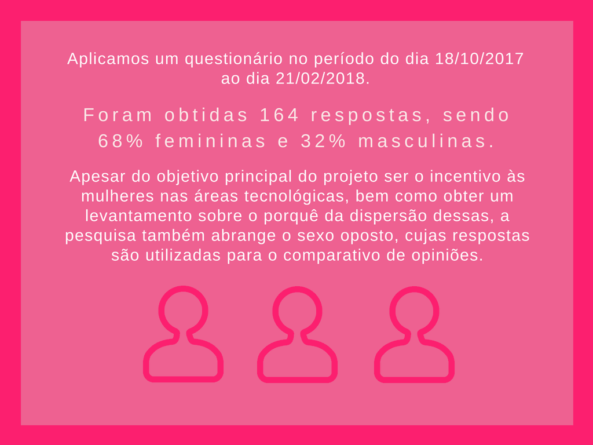
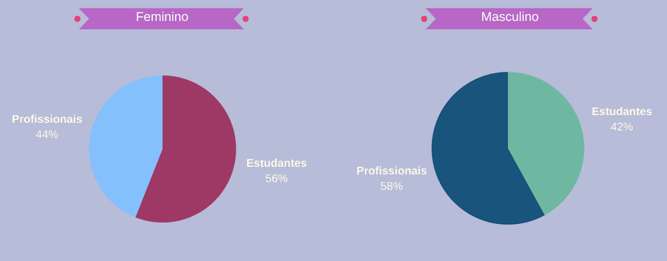
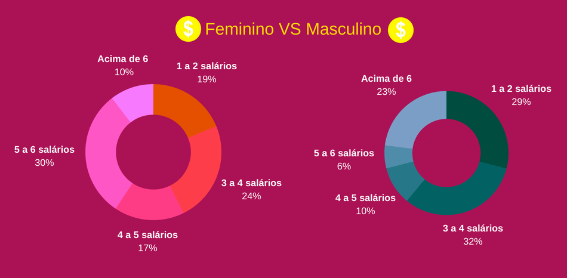

O projeto de pesquisa Developer Girls é um website com iniciativas de mulheres na tecnologia e relatos de experiência para fazer com que as mulheres busquem mais a área de TI e desenvolvam seus próprios projetos.
Visando mapear as dificuldades dessas mulheres em prosseguirem na área, desenvolveu-se um formulario pelo Google Forms contendo questões disponibilizadas para estudantes e profissionais de tecnologia.
Pode-se observar que as mulheres por alguma razão não se incluem na área de informática, por que isso ocorre?

Ao fazer um comparativo das áreas de atuação entre homens e mulheres, notamos um interesse maior das mulheres em buscar formação na área de TI,
podemos então pensar em um futuro próximo com mais mulheres inseridas. Entretanto, no aspecto profissional ainda é maior a inserção dos homens (lado direito), como mostra os gráficos abaixo:

Os colaboradores responderam a seguinte pergunta: “Se recebeu algum tratamento diferente, este te beneficiou ou prejudicou? Qual a sua explicação para isso?”
Veja algumas respostas femininas a seguir.
Fazendo uma análise crítica a essas respostas, podemos ver que o machismo ainda está muito presente em ambos aspectos (estudantes e profissionais).
Essa atitude gera desconforto em algumas mulheres, pois, muitos homens, sejam eles em empresas ou discentes, desacreditam da capacidade que elas têm de realizar seus projetos.
Isso torna-se um dos porquês do distanciamento delas nessas áreas. Agora observe os gráficos abaixo sobre a formação dos colaboradores, lado esquerdo feminino e direito masculino:
Ao fazer um comparativo das áreas de atuação entre homens e mulheres, notamos um interesse maior das mulheres em buscar formação na área de TI,
podemos então pensar em um futuro próximo com mais mulheres inseridas. Entretanto, no aspecto profissional ainda é maior a inserção dos homens, como mostra os gráficos abaixo:

Ao fazer um comparativo das áreas de atuação entre homens e mulheres, notamos um interesse maior das mulheres em buscar formação na área de TI,
podemos então pensar em um futuro próximo com mais mulheres inseridas. Entretanto, no aspecto profissional ainda é maior a inserção dos homens, como mostra os gráficos abaixo: